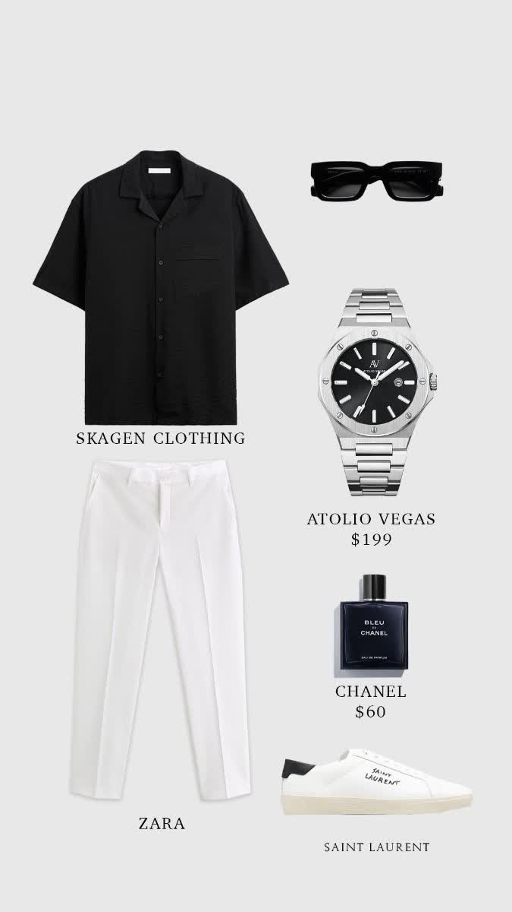
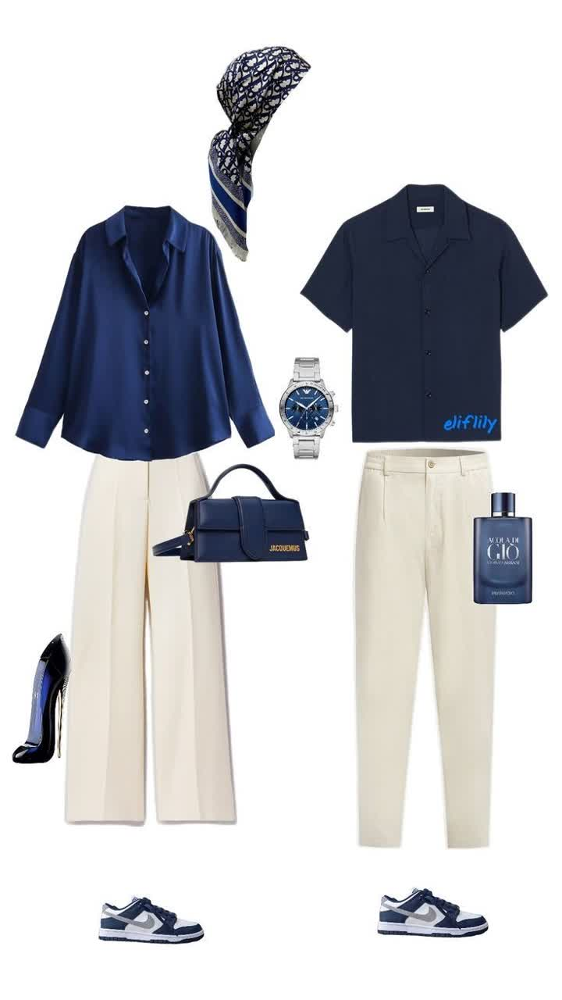
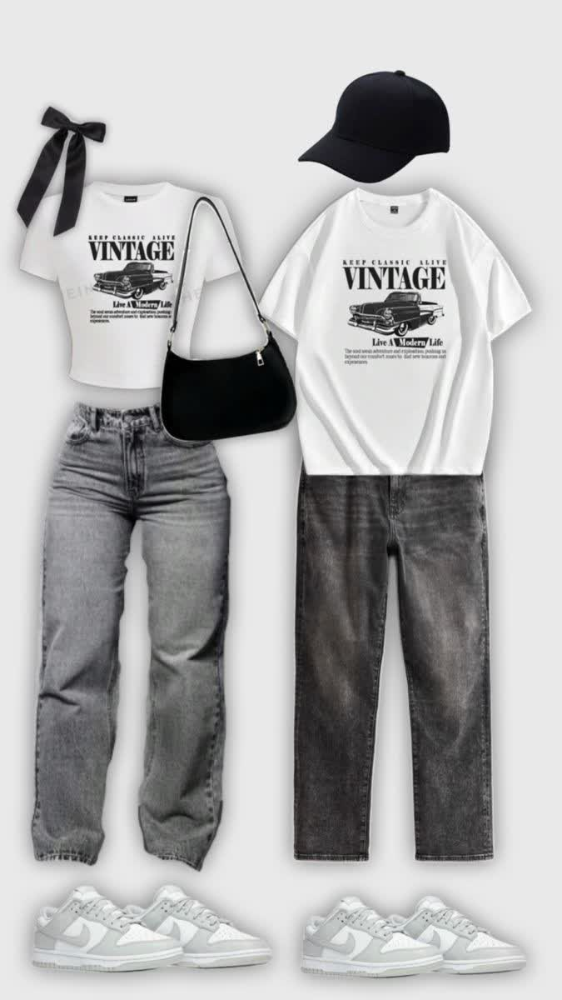
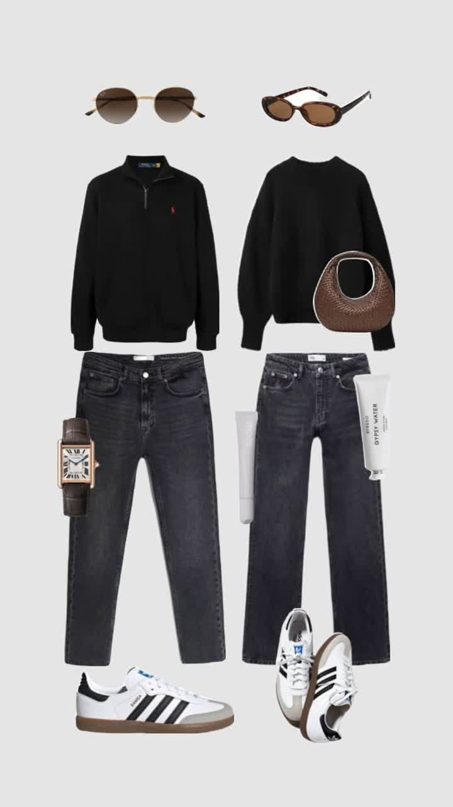

استایل خیابانی (Street Style)
استایل خیابانی یکی از محبوبترین و تاثیرگذارترین سبکهای پوشش در دنیای مد امروزی است. این استایل بر اساس فرهنگ خیابانی، راحتی، و بیان شخصیت فردی شکل گرفته است و بیشتر در جوانان و علاقهمندان به مد معاصر دیده میشود.
از آیتمهای اصلی این سبک میتوان به هودیهای اورسایز، کتهای جین، شلوارهای کارگو، کفشهای اسپرت خاص و اکسسوریهای خلاقانه اشاره کرد. رنگهای تیره یا جسورانه، چاپهای گرافیکی، و ترکیب غیرمنتظره لباسها نیز از مشخصات این استایل هستند.



